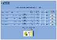
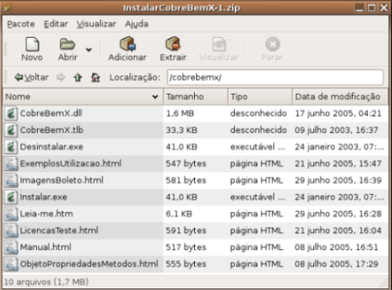
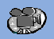

::Manual Técnico CobreBemX:: |
|  |
O CobreBemX é um componente COM "não visual" distribuído sob a forma de DLL que possui as seguintes funcionalidades:
Impressão de Boletos Bancários em impressoras Laser ou Jato de Tinta para diversos bancos;
Envio de Boletos por E-Mail;
Geração de Arquivo Remessa padrão CNAB e padrão Febraban 3.0;
Leitura de Arquivo Retorno padrão CNAB e padrão Febraban 3.0;
Wizard de Configuração de Contas Correntes;
Geração de Boletos Bancários On Line no ambiente Windows;
Geração de Arquivo Remessa para Débito em Conta Corrente;
Leitura de Arquivo Retorno de Débito em Conta Corrente;
Aprovação de Cartões de Crédito através do serviço Aprova Fácil.
|
|
|
ÍNDICE
|
|
1 - INSTALAÇÃO
Para instalar o CobreBemX no seu computador, siga o procedimento abaixo:
- Descompacte o arquivo de instalação em um diretório desejado;
- Execute o arquivo "Instalar.exe" para registrar a DDL no seu Windows.
Para instalar o CobreBemX
no computador do seu cliente em conjunto com o programa desenvolvido à
parte, siga o procedimento abaixo:
- Copie o arquivo CobreBemX.dll para qualquer diretório do computador
do cliente. De preferência que seja o mesmo diretório onde o programa
está instalado;
- Registre a DLL no Windows utilizando, por exemplo, o arquivo
''Instalar.exe'' contido na InstalShield, basta incluir o arquivo
''CobreBemX.dll'' em sua aplicação e solicitar que o mesmo seja
registrado no Windows pelo instalador;
- Inclua também os arquivos de imagem que o cliente irá necessitar
para utilizar as funções de Envio de Boleto por E-Mail, Geração de HTML
de Boleto e Impressão de Boletos. Sugerimos que todos sejam instalados.

Voltar ao Indice
|
|
2 - EXEMPLOS PARA UTILIZAÇÃO DO COMPONENTE
No diretório "Exemplos" existente na instalação, há os fontes de
programas que demonstram a utilização das funcionalidades do CobreBemX
nas seguintes linguagens:
| Access 2000; | HTML + JavaScript; |
| Access 97; | HTML + VBScript; |
| AcucoBol | Java; |
| ASP Aprovação Cartão Crédito; | NetExpress; |
| ASP Boleto On-Line; | PHP; |
| ASP Envio Boleto E-Mail; | PowerBuilder; |
| ASP Geração Arquivo Remessa; | Power Cobol; |
| ASP Impressão Boletos; | Progress; |
| ASP Leitura Arquivo Retorno; | SAP - Abap 4; |
| Clarion; | VisualBasic 5 com Banco de Dados; |
| Delphi com Banco de Dados; | VisualBasic com Banco de Dados; |
| Delphi Layouts Personalizados; | VisualBasic Layouts Personalizados; |
| Delphi sem Banco de Dados; | VisualBasic sem Banco de Dados; |
| Excel; | Visual DataFlex; |
| Five Win; | Visual FoxPro; |
| Visual FoxPro Geração Arquivo Remessa. |
No componente CobreBemX quem desejar utilizar Delphi.Net, poderá realizar os testes com os exemplos em C# (C Sharp), disponíveis no site.
Importante: O CobreBemX pode ser
utilizado com qualquer tipo de Banco de Dados. Os exemplos que
acompanham o componente utilizam Banco de Dados tipo Paradox (Delphi) e
tipo Microsoft Access (Visual Basic), porém você pode utilizar o Banco
de Dados que desejar para armazenar os seus dados.
Voltar ao Indice
|
|
3 - REALIZAÇÃO DE TESTES
No diretório "Exemplos/Licenças", há apenas o
arquivo "arquivo de licença para teste", este utilizado para realizar
quaisquer tipos de testes que julgar necessário, tendo disponível todas
as funcionalidades que o componente oferece.
Para efetuar os seus testes com o CobreBemX em qualquer um dos bancos suportados, siga as instruções contidas na página Características Bancos e Carteiras.

Licença de Teste
Voltar ao Indice
|
|
4 - CHAVES DE LICENÇAS - DEFINITIVAS
Ao adquirir o CobreBemX serão encaminhadas as chaves para gerar os
arquivos de licenças para os bancos e carteiras do seu Cedente.
O arquivo de licença é gerado para cada Cedente/Banco/Carteira e
portanto não serve para qualquer banco, somente para o gerado
anteriormente.
Uma Chave de Licença Definitiva permite a geração para um mesmo
Cedente, identificado pelo CPF ou CNPJ de quantos arquivos de licença
forem necessários para diversos Bancos/Carteiras.
Os arquivos de licença podem ser gerados através da URL: http://licenca.cobrebemx.com.br
Ao preencher as informações necessárias e pedir para gerar o arquivo de
licença, automaticamente será iniciado o download do arquivo, exceto
para os navegadores IE 5.5, que será necessário exibir o código fonte e
salvar manualmente o arquivo gerado.
Licença Definitiva
Voltar ao Indice
|
|
5 - CONFIGURAÇÃO DE CONTAS CORRENTES
Ao ter integrado o CobreBemX a sua solução, será necessário configurar a conta corrente que será utilizada.
Os dados de conta corrente deverão estar presentes sempre, pois sem
eles não será possível realizar nenhum outro comando do componente.
Para configurar sua conta corrente você deverá saber exatamente quais
informações aquele determinado Banco e Carteira solicitam e o formato
cuja essas informações deverão ser passadas.
Há três formas de você verificar quais são esses dados, veja:
No menu "Downloads" desse site a partir do link: Licenças para Desenvolvimento (Teste) aos Bancos e Carteiras disponíveis;
Utilizando o método "ConfiguraContaCorrente", pois este exibe uma tela de solicitação dos dados já considerando o Banco e a Carteira informado pelo arquivo de licença;
Construindo uma tela personalizada para a configuração da conta, utilizando as propriedades cujos nomes são iniciados em "Mascara", "Cabecalho" e "Ajuda". Neste mesmo site, no menu "Download", no link Mais downloads do CobreBemX, há um exemplo em Delphi que orienta como fazê-la.
Apresentamos abaixo através de filmes, alguns dados utilizados para a configuração de uma conta corrente.
Parte 1
Parte 2
Parte 3
Parte 4
Parte 5
Voltar ao Indice
|
|
6 - DEFINIÇÃO DA COBRANÇA
Após configurar a sua conta corrente no componente se faz necessário definir a cobrança, ou seja, criar seus boletos bancário.
Veja através dos filmes abaixo como definir sua cobrança:
Parte 1
Parte 2
Parte 3
Parte 4
Parte 5
Voltar ao Indice
|
|
7 - DÉBITO EM CONTA CORRENTE
Para utilizar este meio de pagamento, será necessário:
Ter habilitado junto ao banco uma carteira de cobrança que permita o Débito em Conta Corrente;
O Sacado deve ter conta no mesmo Banco que o Cedente.
O Débito em Conta Corrente no CobreBemX é tratado como um arquivo de
remessa ''comum'', ou seja, utilizado para emissão de boletos.Sendo que
para utilizar o Débito, será necessário incluir duas propriedades do
objeto DocumentosCobranca, são elas:
AgenciaDebito - Informe a agência do sacado (sem pontos e traços);
ContaCorrenteDebito - Informar a conta corrente do sacado (sem pontos e traços).
Para o CobreBemX gerar o arquivo no layout de débito em conta corrente, deverá ser passado o valor DebitoCC para a propriedade CobreBemX.ArquivoRemessa.Layout.
Alguns bancos não utilizam este layout. Para verificar o layout suportado pelo seu banco acesse Características Bancos e Carteiras.
Voltar ao Indice
|
|
8 - ENVIO DE BOLETOS POR E-MAIL
O componente CobreBemX envia diversos boletos aos
seus clientes em formato html ou como arquivo anexado utilizando apenas
uma conexão com o seu servidor SMTP.
Para realizar o envio do boleto por e-mail é necessário passar as
propriedades referentes ao arquivo de licença, conta corrente, agência
etc, conforme abaixo:
CobreBemX.PadroesBoleto.PadroesBoletoEmail.SMTP.Servidor := 'Seu Servidor';
CobreBemX.PadroesBoleto.PadroesBoletoEmail.SMTP.Porta := Número da Porta;
CobreBemX.PadroesBoleto.PadroesBoletoEmail.URLImagensCodigoBarras := 'URL Código de Barras';
CobreBemX.PadroesBoleto.PadroesBoletoEmail.URLLogotipo := 'URL Imagem Logotipo';
CobreBemX.PadroesBoleto.PadroesBoletoEmail.PadroesEmail.Assunto := 'Assunto Email';
CobreBemX.PadroesBoleto.PadroesBoletoEmail.PadroesEmail.EmailFrom.Endereco := 'Endereço E-mail Cedente';
CobreBemX.PadroesBoleto.PadroesBoletoEmail.PadroesEmail.EmailFrom.Nome := Nome Cedente;
Para servidores do tipo seguros, preencha as propriedades:
CobreBemX.PadroesBoleto.PadroesBoletoEmail.SMTP.Usuario := 'Nome do Usuário';
CobreBemX.PadroesBoleto.PadroesBoletoEmail.SMTP.Senha := 'Senha do Usuário';
Para informar a maneira como seu boleto será enviado, utilize a propriedade:
CobreBemX.PadroesBoleto.PadroesBoletoEmail.PadroesEmail.FormaEnvio := feeSMTPBoletoHTML;
No exemplo acima o boleto será enviado em HTML no corpo do e-mail.
Esta informação poderá ser alterada por outras formas de envio, verifique na Documentação do CobreBemX as Formas de Envio existentes.
Na parte onde serão passados os dados do DocumentosCobranca, deverá ser inclusas as seguintes linhas de código:
Considere que o Boleto é uma variável do tipo Variant, que recebeu o valor CobreBemX.DocumentosCobranca.Add
EmailSacado := Boleto.EnderecosEmailSacado.Add;
EmailSacado.Nome := 'Nome Sacado';
EmailSacado.Endereco := 'Endereço E-mail Sacado';
Boleto.ControleProcessamentoDocumento.EnviaEmail := scpExecutar;
No lugar de CobreBemX.ImprimeBoletos ou CobreBemX.GravaArquivoRemessa, coloque CobreBemX.EnviaBoletosPorEmail
Voltar ao Indice
|
|
9 - LAYOUTS DE BOLETOS
O CobreBemX permite a personalização dos seus
boletos com diversos tipos de layouts, que podem ser modificados
conforme sua necessidade.
Os layouts que possuem no nome a palavra "Personalizado" poderão ser
alterados através de código HTML. No diretório
''Exemplos/HTMLReciboSacado'' há o código HTML padrão utilizado na
geração dos recibos padronizados. Utilize estes códigos como base para
criar os seus recibos personalizados.
Existem 20 tipos de layouts no CobreBemX, são eles:
| Padrão; | Padrão Endereçado Verso; |
| Padrão HTML; | InvertidoEndereçado Verso; |
| Padrão Recibo Personalizado HTML; | Padrão Enderçado Verso Recibo Personalizado; |
| Invertido; | Invertido Endereçado Verso Recibo Personalizado; |
| Carnet Recibo Lateral Direita; | Padrão Verso Personalizado; |
| Carnet Recibo Lateral Esquerda; | Invertido Verso Personalizado; |
| Padrão Recibo Personalizado; | Padrão Verso Personalizado Recibo Personalizado; |
| Invertido Recibo Personalizado; | Invertido Verso Personalizado Recibo Personalizado; |
| Carnet Recibo Lateral Direita Personalizado; | Carnet Recibo Topo; |
| Carnet Recibo Lateral Esquerda Personalizado; | Carnet Recibo Topo Personalizado; |
Os códigos HTML devem ser informados às seguintes propriedades:
HTMLReciboPersonalizado para os layouts que permitem a formatação do Recibo do Sacado;
HTMLVersoPersonalizado para os layouts que permitem formatação do Verso do boleto.
Caso seja necessário personalizar o verso e o recibo do sacado, deverá
ser passado o código HTML nas duas propriedades citadas acima, e o
layout a ser escolhido poderá ser Padrão Verso Personalizado Recibo
Personalizado ou Invertido Verso Personalizado Recibo Personalizado.
Os boletos podem ser personalizados tantos na geração On Line quanto na
Of Line, sendo que para utilizar um layout do tipo personalizado na
geração On Line, o nome do layout deve ser informado com a palavra
''Impressao'' ao final, veja:
Exemplo: CobreBemX.PadroesBoleto.PadroesBoletoEmail.LayoutBoletoEmail := 'CarnetReciboLateralEsquerdaImpressao';
Poderão ser utilizados quaisquer um dos layouts citados acima, desde que estejam com a palavra ''Impressão'' ao final.
Caso o layout seja informado sem a palavra Impressão, ao ser solicitado
que o boleto seja gerado, a página será exibida em branco.
Veja abaixo exemplos de alguns dos layouts citados acima:
Layout Padrão
Layout Padrão Endereço no Verso
Layout Invertido Endereço no Verso
Layout Invertido
Layout Carnet Recibo Lateral Esquerda
Layout Carnet Recibo Lateral Direita
Layout Carnet Recibo Topo
Voltar ao Indice
|
|
10 - GERAÇÃO ON LINE
Com o auxílio do CobreBemX, sua aplicação poderá realizar cobrança
através da internet no ambiente Windows, nas modalidades de cobrança:
Boleto Bancário e Cartão de Crédito*
* Disponível quando utilizado em conjunto com o Aprova Fácil.
Em nosso site disponibilizamos exemplos da geração on line em diversas linguagens, para visualizar acesse Downloads CobreBemX.
Voltar ao Indice
|
|
11 - ARQUIVO REMESSA
É um arquivo enviado pelo cliente ao banco contendo a cobrança a ser processada, seja ela impressa pelo Cedente ou pelo Banco.
Com este arquivo o banco terá ciência da cobrança a ser enviada para o
seu cliente, antes mesmo dela ser processada, sendo possível executar
todas as ações acordadas previamente com o cedente.
Cada banco e carteira habilitada junto ao mesmo cedente, possui o seu layout definido.
Converse com o seu Gerente ou com área de cobrança para se informar sobre qual é o seu layout habilitado junto ao seu Banco.
Lembramos que o processamento da cobrança através de arquivo remessa
normalmente é utilizado por carteiras do tipo ''registrada'', salvo, se
o próprio Banco for imprimir a sua cobrança.
Arquivo de Remessa
Voltar ao Indice
|
|
12- ARQUIVO RETORNO
Arquivo enviado pelo banco ao cedente para informar as liquidações
ocorridas, confirmar o recebimento dos títulos e das instruções
comandadas pelo correntista.
O layout do arquivo retorno obedece a padronização mediante ao layout
habilitado junto ao seu banco de acordo com sua carteira de cobrança.
Todo banco disponibiliza para o cedente o arquivo retorno para que o
mesmo possa gerenciar sua cobrança, independente do tipo da cobrança,
ou seja, podendo ser registrada ou sem registro.
Parte 1
Parte 2
Parte 3
Parte 4
Parte 5
Observe através do filme abaixo o resultado da leitura do arquivo retorno, cujo código fonte encontra-se nos filmes acima:
Resultado
Voltar ao Indice
|
|
13 - DOCUMENTAÇÃO TÉCNICA
A Documentação Técnica do CobreBemX está composta por todos os Objetos,
Propriedades e Métodos existentes no componente, incluindo suas
respectivas definições.
Para que a Documentação Técnica do CobreBemX seja compreendida mais facilmente é interessante visualizar a Hierarquia de Objetos.
A Hierarquia de Objetos, funciona, como uma ''árvore'', onde será
possível visualizar de maneira rápida e fácil as propriedades e objetos
existentes no CobreBemX.
Para maiores detalhes, utilize os exemplos práticos disponibilizados no site da Cobre Bem Tecnologia, a partir de Downloads CobreBemX.
A documentação do CobreBemX pode ser visualizada através do arquivo
''Documentacao\CobreBemX.htm'', este é salvo automaticamente em seu
computador ao ser realizado o download do componente. Neste arquivo
contém a lista dos objetos suportados, seguidos de suas propriedades e
métodos.
A Documentação Técnica do CobreBemX é disponibilizada de outra maneira:
Através deste Item do Manual Técnico, podendo ser acessada a partir de: Documentação Técnica CobreBemX.
Voltar ao Indice
|
|
14 - INFORMAÇÃO AO DESENVOLVEDOR
Sugerimos a leitura do Manual de Noções Básicas
de Cobrança e principalmente aconselhamos que seja orientado ao
cliente, futuro cedente a leitura do item ''Orientação para o Cedente''
existente no referido texto.
O Manual de Noções Básicas de Cobrança está disponível também em PDF na área de suporte do site da Cobre Bem Tecnologia.
Voltar ao Indice
|
|
15 - DESISNTALAÇÃO
O CobreBemX é um componente, logo requer instalção e desinstalação.
Ele utiliza uma DLL e o arquivo de configuração (.conf) criado fica
armazenado no mesmo diretório onde está instalado a DLL do CobreBemX.
Para retirar o CobreBemX do seu computador, basta removê-lo de seu
computador, através da execução do arquivo ''Desinstalar.exe''.
Voltar ao Indice
|
|
16 - DÚVIDAS FREQÜENTES
Existe em nosso site uma área de perguntas e respostas, que poderão auxiliá-lo quanto a sua dúvida, para acessá-la clique aqui.
Há também breves orientações sobre cobrança, para maiores informações consulte o Manual Técnico de Cobrança disponibilizado em nosso site.
Voltar ao Indice
|
|
Copyright © 2005 Cobre Bem Tecnologia - Todos os direitos reservados. All Rights reserved. |
|